ベンチマーク：045 桃山学院大学
https://www.andrew.ac.jp/
実物を開く ↗
高さ540pxの帯に写真2枚（不等幅57/43）。見出しが写真をまたいで白抜きで横断
写真が主役。帯の下は明るい地に戻る

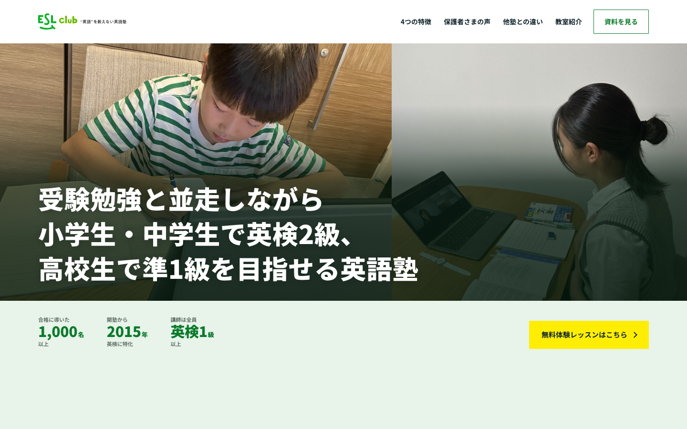
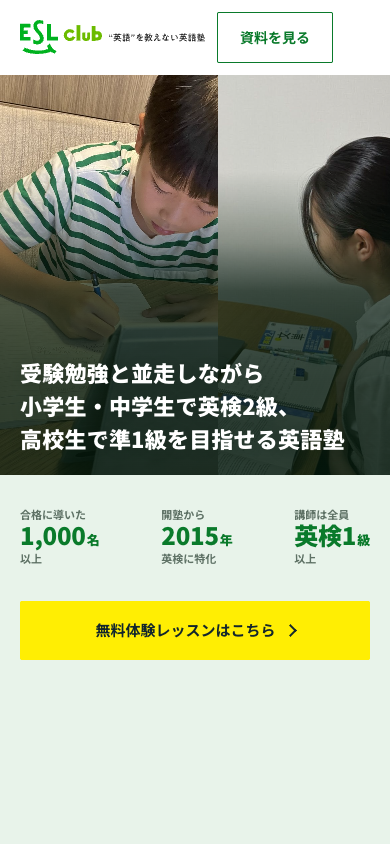
いずれも【シーン写真2枚（少年 p07・少女 p20）＋見出し39字＋数字3つ】という同じ素材。ベンチマークだけが違う。番号を言ってください。
高さ540pxの帯に写真2枚（不等幅57/43）。見出しが写真をまたいで白抜きで横断
写真が主役。帯の下は明るい地に戻る


純白の地に細い巨大文字。丸は実測1.05em（字面の1.45倍）
文字が主役。面を1つも作らないので白地で成立する

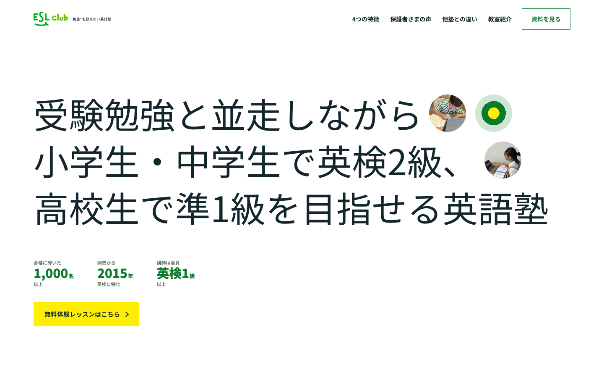
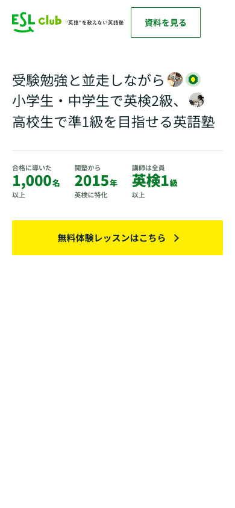
上に見出し／下に写真2枚（隙間93px）／右上から【弧】の帯が抜ける
帯の中心と半径を実測4点から連立で解いた

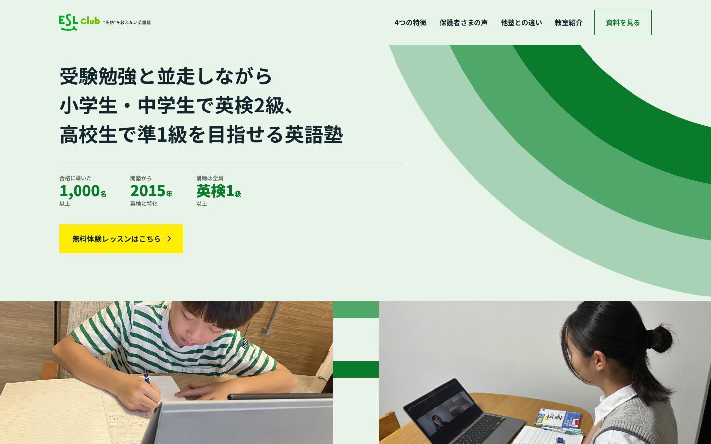
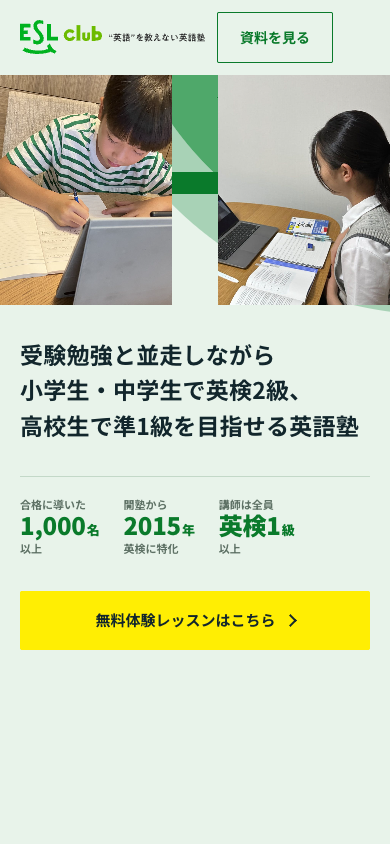
写真が全面。白抜きの見出しを中央下に3行。文字間に小さい【矩形】写真
1枚の場に入り込む感じ。少女は文字間の小写真

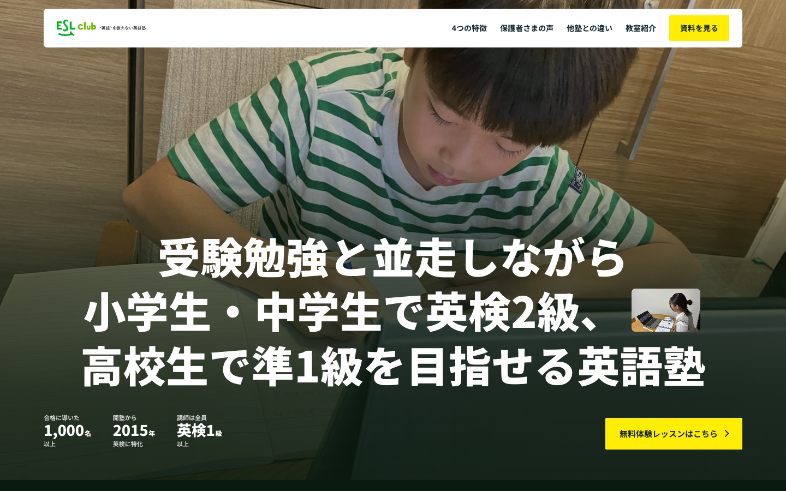
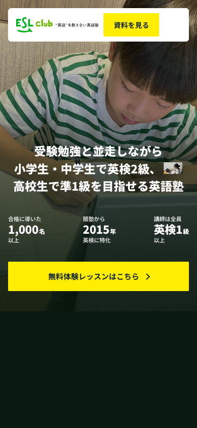
タイポが二層。奥に巨大な半透明の数字／手前に見出し
「1,000名以上」を奥の層で1回だけ出す。下の並びからは外した

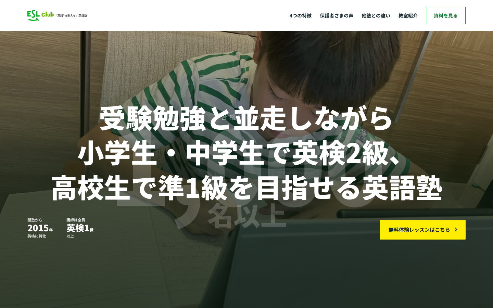
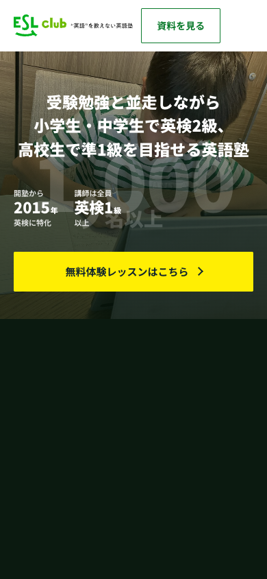
淡いグラデ地。見出しを中央上に。下に写真を横並び、左上の角に色
中央揃え。縦横比0.75と角の三角は実測値

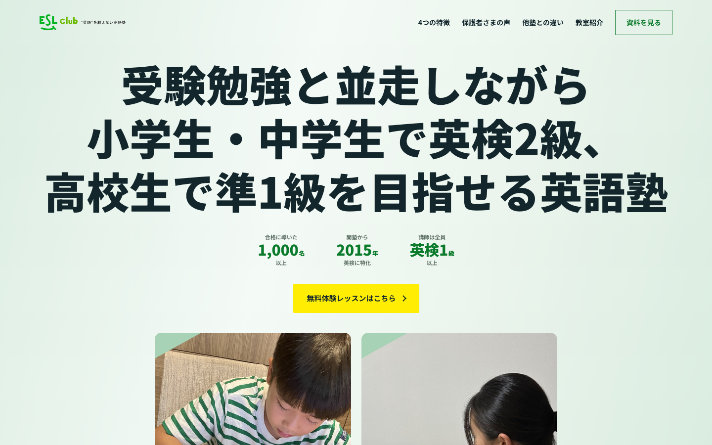
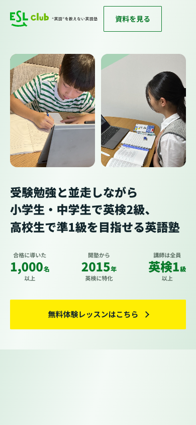
ブランド色の【濃いベタ地】。縦組みを左右に割り、中央に写真
地の輝度0.142・白との比5.48（027は0.140・5.52）

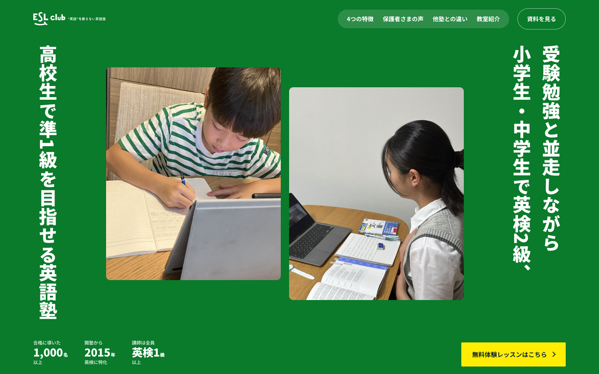
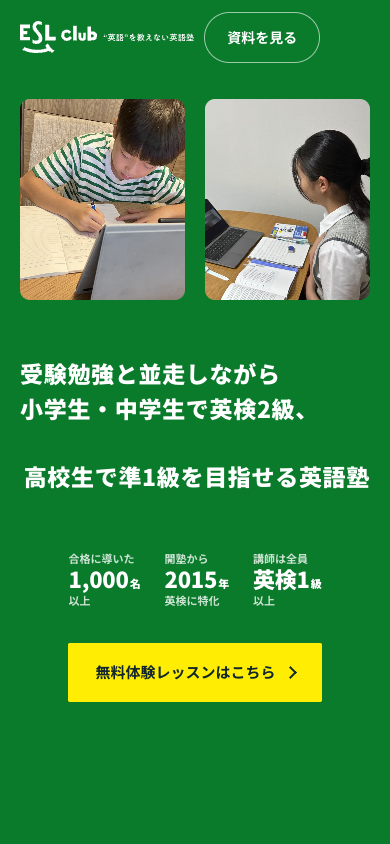
白地に画面より大きい薄い楕円。傾けた写真2枚。形の違うラベルを散らす
巨大英字はブランド名なので借りていない

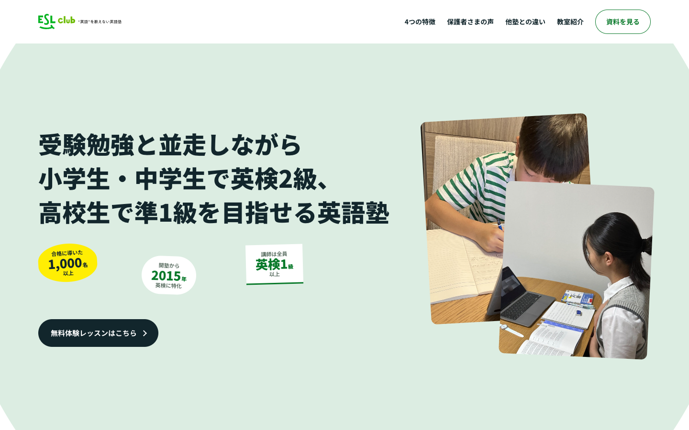
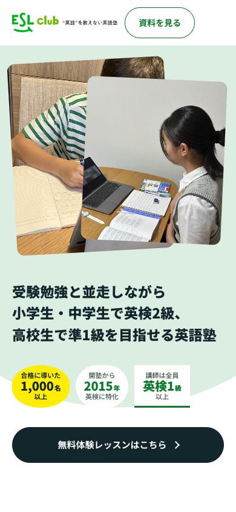